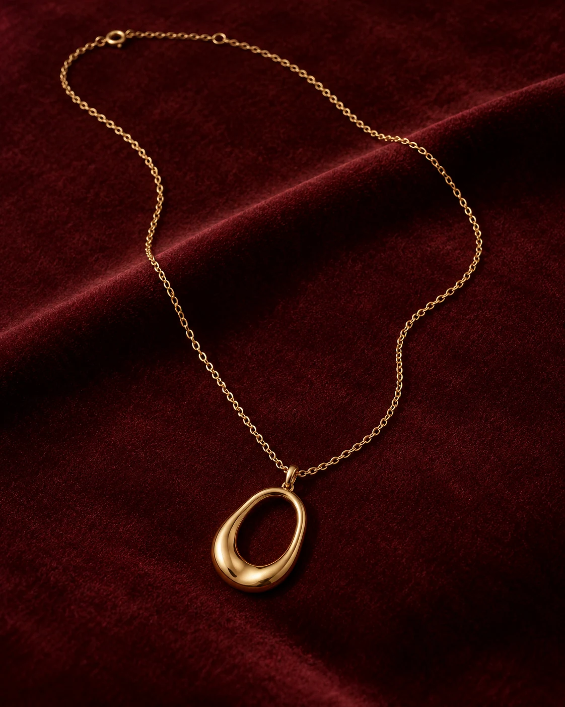

YAYLACI · HİKÂYE 02 / 03 · HEDİYE
Kalpten gelen
bir ışıltı.
Bazen tek bir ayrıntı, söylemek istediğiniz her şeyi anlatır. İçten gelen anlar için bir parıltı.

BİR HİS, BİR AYRINTI
Hatırlanacak bir an.
Kutlamak, teşekkür etmek ya da sadece gülümsetmek. Hediyenin anlamı onu seçtiğiniz duyguda başlar.
Kolye görsel seçkisiMALATYA · İNÖNÜ KAPALI ÇARŞISI
Işıltıyı yakından görün.
Yaylacı Kuyumculuk'u ziyaret edin. Görseller ilham içindir; güncel parçaları mağazada inceleyebilirsiniz.
Çarşı konumunu aç (yeni sekme)Bağlantı İnönü Kapalı Çarşısı konumunu açar.